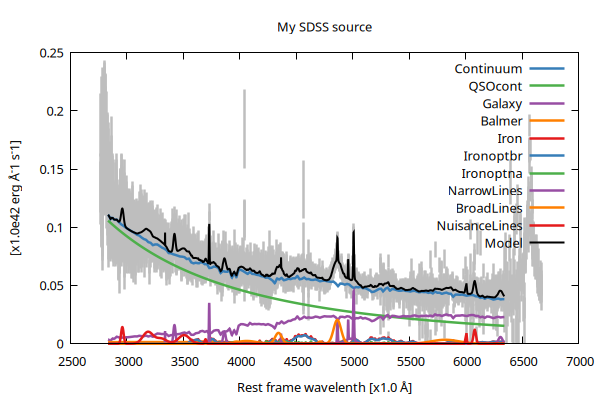

QSFit.jl
QSO spectral fitting made easy !!

QSFit started as an attempt to perform automatic analysis of optical spectra of AGNs and QSOs in a simple, replicable and shareable way. The first implementation in IDL language (see repo here has been used to analyze 71261 AGN and QSO spectra from SDSS DR10. The resulting spectral properties (such as emission line luminosities and widths, continuum slopes, etc.) are collected in a catalog in FITS format, as well as being publicly available here: https://qsfit.inaf.it/.
The details of the spectral analysis are presented in a paper: Calderone et al. 2017 (also available on arXiv).
The code has now been ported to Julia and the new package is dubbed QSFit.jl. It comes with the following advantages with respect to the IDL version:
- Julia is released with a MIT license and doesn't require a paid license to be executed;
- It provides better performances and allows to distribute workload on multiple CPUs or multiple host;
- It provides several reusable Components and a few Recipes to perform automatic spectral analysis as well as interactive emissione line fitting;
- It exploits the concept of customizable recipes (see Recipes) to customize the analysis for specific purposes;
QSFit.jl relies on the GModelFit.jl package to perform spectral fitting. A basic knowledge of such package is required to get the most out of QSFit.jl.
Installation
In the Julia REPL type:
using Pkg
Pkg.add("GModelFit")
Pkg.add("GModelFitViewer")
Pkg.add("QSFit")To test the package type Pkg.test("QSFit").
Basic usage
The most important types used in QSFit.jl are:
Spectrum: it represent an observed spectrum of a AGN or QSO. It contains both the observed wavelengths and flux densities (with associated undertainties), as well as a map of "good" (i.e. reliable) spectral bins and an indication of spectral resolution. TheSpectrumobject can operate on spectra taken from any instrument (not only SDSS);CRecipe: it is a container for a specific recipe to be used to analyze aSpectrum, and for all recipe-specific options. QSFit.jl provides a few Built-in recipes to analyze the spectrum, which can optionally be customized by the user. New recipes can also be implemented, either extending the built-in ones or starting from scratch.
The typical workflow for a spectral analysis is as follows:
using QSFit, QSFit.QSORecipes
# Download a spectrum
filename = download("http://dr10.sdss3.org/sas/dr10/sdss/spectro/redux/26/spectra/0752/spec-0752-52251-0323.fits")
# Read spectrum into a Spectrum Object
spec = Spectrum(Val(:SDSS_DR10), filename, label="My SDSS source")
# Create a CRecipe object based on the Type1 recipe to analyze the spectrum
recipe = CRecipe{Type1}(redshift=0.3806, Av=0.21)
# Analyze the spectrum with the above recipe
res = analyze(recipe, spec)
# Display best fit parameter values:
show(res.bestfit)Timestamp: 2026-02-05T00:17:45.535
Spectrum: My SDSS source
resol.: 2000.000
good: 88.671%, units: X=1.0 Å, Y=1.0e-17 erg Å^-1 cm^-2 s^-1
Av: 0.210 (DustExtinction.OD94(3.1))
De-reddening factors @ 1450, 3000, 5100 AA: [1.6990216358789452, 1.4214289702517076, 1.2389351505225081]
z: 0.381 (Cosmology.FlatLCDM{Float64}(0.7, 0.6999146929857499, 0.3, 8.53070142500527e-5))
Good samples before line coverage filter: 3389 / 3822
Lines considered in the fit:
Line Lyb_na : 1025.722A NarrowLine
Line Lyb_br : 1025.722A BroadLine
Line Lya_na : 1215.670A NarrowLine
Line Lya_br : 1215.670A BroadLine
Line NV_1241_na : 1240.812A NarrowLine
Line OI_1306_br : 1304.352A BroadLine
Line CII_1335_br : 1335.301A BroadLine
Line SiIV_1400_br : 1398.262A BroadLine
Line CIV_1549_na : 1549.490A NarrowLine
Line CIV_1549_br : 1549.490A BroadLine
Line HeII_1640_br : 1640.420A BroadLine
Line OIII_1664_br : 1663.479A BroadLine
Line AlIII_1858_br : 1858.753A BroadLine
Line CIII_1909_br : 1908.530A BroadLine
Line CII_2326_br : 2326.440A BroadLine
Line l2420p0_br : 2420.000A BroadLine
Line MgII_2798_na : 2799.941A NarrowLine
Line MgII_2798_br : 2799.941A BroadLine
Line NeV_3345 : 3346.400A ForbiddenLine
Line NeV_3426 : 3426.500A ForbiddenLine
Line OII_3727 : 3728.484A ForbiddenLine
Line NeIII_3869 : 3870.160A ForbiddenLine
Line Hd_br : 4102.892A BroadLine
Line Hg_br : 4341.684A BroadLine
Line OIII_4363 : 4364.436A ForbiddenLine
Line HeII_4686_br : 4687.020A BroadLine
Line Hb_na : 4862.683A NarrowLine
Line Hb_br : 4862.683A BroadLine
Line OIII_4959 : 4960.295A ForbiddenLine
Line OIII_5007 : 5008.240A ForbiddenLine
Line OIII_5007_bw : 5008.240A QSFit.QSORecipes.BlueWing
Line HeI_5876_br : 5877.305A BroadLine
Line OI_6300 : 6302.046A ForbiddenLine
Line OI_6364 : 6365.536A ForbiddenLine
Line NII_6549 : 6549.850A ForbiddenLine
Line Ha_na : 6564.610A NarrowLine
Line Ha_br : 6564.610A BroadLine
Line Ha_bb : 6564.610A VeryBroadLine
Line NII_6583 : 6585.280A ForbiddenLine
Line SII_6716 : 6718.290A ForbiddenLine
Line SII_6731 : 6732.670A ForbiddenLine
Line OI_8448_br : 8448.776A BroadLine
Line SIII_9069 : 9071.100A ForbiddenLine
Line Pa9_br : 9231.547A BroadLine
Line SIII_9532 : 9533.200A ForbiddenLine
Line Pa8_br : 9548.590A BroadLine
Line Pad_br : 10052.128A BroadLine
Line HeI_10832_na : 10832.860A NarrowLine
Line HeI_10832_br : 10832.860A BroadLine
Line Pag_br : 10941.091A BroadLine
Line Pab_br : 12821.590A BroadLine
Line Paa_br : 18756.130A BroadLine
Line Lyb_na coverage: 0.000 on range 1024.8 < λ < 1026.6, threshold is < 0.600, neglecting...
Line Lyb_br coverage: 0.000 on range 1017.2 < λ < 1034.3, threshold is < 0.600, neglecting...
Line Lya_na coverage: 0.000 on range 1214.6 < λ < 1216.7, threshold is < 0.600, neglecting...
Line Lya_br coverage: 0.000 on range 1205.5 < λ < 1225.8, threshold is < 0.600, neglecting...
Line NV_1241_na coverage: 0.000 on range 1239.7 < λ < 1241.9, threshold is < 0.600, neglecting...
Line OI_1306_br coverage: 0.000 on range 1293.5 < λ < 1315.2, threshold is < 0.600, neglecting...
Line CII_1335_br coverage: 0.000 on range 1324.2 < λ < 1346.4, threshold is < 0.600, neglecting...
Line SiIV_1400_br coverage: 0.000 on range 1386.6 < λ < 1409.9, threshold is < 0.600, neglecting...
Line CIV_1549_na coverage: 0.000 on range 1548.1 < λ < 1550.8, threshold is < 0.600, neglecting...
Line CIV_1549_br coverage: 0.000 on range 1536.6 < λ < 1562.4, threshold is < 0.600, neglecting...
Line HeII_1640_br coverage: 0.000 on range 1626.7 < λ < 1654.1, threshold is < 0.600, neglecting...
Line OIII_1664_br coverage: 0.000 on range 1649.6 < λ < 1677.3, threshold is < 0.600, neglecting...
Line AlIII_1858_br coverage: 0.000 on range 1843.3 < λ < 1874.2, threshold is < 0.600, neglecting...
Line CIII_1909_br coverage: 0.000 on range 1892.6 < λ < 1924.4, threshold is < 0.600, neglecting...
Line CII_2326_br coverage: 0.000 on range 2307 < λ < 2345.8, threshold is < 0.600, neglecting...
Line l2420p0_br coverage: 0.000 on range 2399.8 < λ < 2440.2, threshold is < 0.600, neglecting...
Line MgII_2798_na coverage: 0.000 on range 2797.5 < λ < 2802.4, threshold is < 0.600, neglecting...
Line MgII_2798_br coverage: 0.000 on range 2785.9 < λ < 2814, threshold is < 0.600, neglecting...
Line NeV_3345 coverage: 1.000 on range 3343.5 < λ < 3349.3
Line NeV_3426 coverage: 1.000 on range 3423.5 < λ < 3429.5
Line OII_3727 coverage: 1.000 on range 3725.2 < λ < 3731.7
Line NeIII_3869 coverage: 1.000 on range 3866.8 < λ < 3873.5
Line Hd_br coverage: 1.000 on range 4068.7 < λ < 4137.1
Line Hg_br coverage: 1.000 on range 4305.5 < λ < 4377.9
Line OIII_4363 coverage: 1.000 on range 4360.6 < λ < 4368.2
Line HeII_4686_br coverage: 1.000 on range 4647.9 < λ < 4726.1
Line Hb_na coverage: 1.000 on range 4858.5 < λ < 4866.9
Line Hb_br coverage: 1.000 on range 4822.1 < λ < 4903.2
Line OIII_4959 coverage: 1.000 on range 4956 < λ < 4964.6
Line OIII_5007 coverage: 1.000 on range 5003.9 < λ < 5012.6
Line OIII_5007_bw coverage: 1.000 on range 4983.2 < λ < 5033.3
Line HeI_5876_br coverage: 0.971 on range 5828.3 < λ < 5926.3
Line OI_6300 coverage: 1.000 on range 6296.6 < λ < 6307.5
Line OI_6364 coverage: 0.600 on range 6360 < λ < 6371.1
Line NII_6549 coverage: 0.000 on range 6544.2 < λ < 6555.5, threshold is < 0.600, neglecting...
Line Ha_na coverage: 0.000 on range 6558.9 < λ < 6570.3, threshold is < 0.600, neglecting...
Line Ha_br coverage: 0.118 on range 6509.9 < λ < 6619.3, threshold is < 0.600, neglecting...
Line Ha_bb coverage: 0.284 on range 6345.8 < λ < 6783.4, threshold is < 0.600, neglecting...
Line NII_6583 coverage: 0.000 on range 6579.6 < λ < 6591, threshold is < 0.600, neglecting...
Line SII_6716 coverage: 0.000 on range 6712.4 < λ < 6724.1, threshold is < 0.600, neglecting...
Line SII_6731 coverage: 0.000 on range 6726.8 < λ < 6738.5, threshold is < 0.600, neglecting...
Line OI_8448_br coverage: 0.000 on range 8378.3 < λ < 8519.2, threshold is < 0.600, neglecting...
Line SIII_9069 coverage: 0.000 on range 9063.2 < λ < 9079, threshold is < 0.600, neglecting...
Line SIII_9532 coverage: 0.000 on range 9524.9 < λ < 9541.5, threshold is < 0.600, neglecting...
Line HeI_10832_na coverage: 0.000 on range 10823 < λ < 10842, threshold is < 0.600, neglecting...
Line HeI_10832_br coverage: 0.000 on range 10743 < λ < 10923, threshold is < 0.600, neglecting...
Line Pa9_br coverage: 0.000 on range 9154.6 < λ < 9308.5, threshold is < 0.600, neglecting...
Line Pa8_br coverage: 0.000 on range 9469 < λ < 9628.2, threshold is < 0.600, neglecting...
Line Pad_br coverage: 0.000 on range 9968.3 < λ < 10136, threshold is < 0.600, neglecting...
Line Pag_br coverage: 0.000 on range 10850 < λ < 11032, threshold is < 0.600, neglecting...
Line Pab_br coverage: 0.000 on range 12715 < λ < 12928, threshold is < 0.600, neglecting...
Line Paa_br coverage: 0.000 on range 18600 < λ < 18913, threshold is < 0.600, neglecting...
Updated coverage:
Line NeV_3345 coverage: 1.000 on range 3343.5 < λ < 3349.3
Line NeV_3426 coverage: 1.000 on range 3423.5 < λ < 3429.5
Line OII_3727 coverage: 1.000 on range 3725.2 < λ < 3731.7
Line NeIII_3869 coverage: 1.000 on range 3866.8 < λ < 3873.5
Line Hd_br coverage: 1.000 on range 4068.7 < λ < 4137.1
Line Hg_br coverage: 1.000 on range 4305.5 < λ < 4377.9
Line OIII_4363 coverage: 1.000 on range 4360.6 < λ < 4368.2
Line HeII_4686_br coverage: 1.000 on range 4647.9 < λ < 4726.1
Line Hb_na coverage: 1.000 on range 4858.5 < λ < 4866.9
Line Hb_br coverage: 1.000 on range 4822.1 < λ < 4903.2
Line OIII_4959 coverage: 1.000 on range 4956 < λ < 4964.6
Line OIII_5007 coverage: 1.000 on range 5003.9 < λ < 5012.6
Line OIII_5007_bw coverage: 1.000 on range 4983.2 < λ < 5033.3
Line HeI_5876_br coverage: 0.971 on range 5828.3 < λ < 5926.3
Line OI_6300 coverage: 1.000 on range 6296.6 < λ < 6307.5
Line OI_6364 coverage: 0.000 on range 6360 < λ < 6371.1, threshold is < 0.600, neglecting...
Good samples after line coverage filter: 3309 / 3822
Fit continuum components...
Fit summary: #data: 3309, #free pars: 5, red. fit stat.: 1.9562, status: OK
Cont. norm. (before): 0.04995349173739629
Cont. norm. (after) : 0.03885489284991561
Fit iron templates...
Fit summary: #data: 3309, #free pars: 3, red. fit stat.: 3.3956, status: OK
Fit known emission lines...
Fit summary: #data: 3309, #free pars: 42, red. fit stat.: 2.0968, status: OK
Fit nuisance emission lines...
Fit nuisance line at lambda: 6081.798674489352
Fit summary: #data: 3309, #free pars: 3, red. fit stat.: 2.0568, status: OK
Fit nuisance line at lambda: 3518.2934644583875
Fit summary: #data: 3309, #free pars: 3, red. fit stat.: 1.8761, status: OK
Fit nuisance line at lambda: 5788.048660342423
Fit summary: #data: 3309, #free pars: 3, red. fit stat.: 1.8733, status: OK
Fit nuisance line at lambda: 3177.8405477011806
Fit summary: #data: 3309, #free pars: 3, red. fit stat.: 1.5847, status: WARN
CMPFit status = 2 may imply one (or more) guess values are too far from optimum
Fit nuisance line at lambda: 3813.5738226359913
Fit summary: #data: 3309, #free pars: 3, red. fit stat.: 1.5643, status: OK
Fit nuisance line at lambda: 3958.5144140228886
Fit summary: #data: 3309, #free pars: 3, red. fit stat.: 1.5367, status: OK
Fit nuisance line at lambda: 3295.5818999665
Fit summary: #data: 3309, #free pars: 3, red. fit stat.: 1.4754, status: OK
Fit nuisance line at lambda: 3048.120283413914
Fit summary: #data: 3309, #free pars: 3, red. fit stat.: 1.4378, status: OK
Fit nuisance line at lambda: 3702.8164554813125
Fit summary: #data: 3309, #free pars: 3, red. fit stat.: 1.4181, status: OK
Fit nuisance line at lambda: 5984.558344198174
Fit summary: #data: 3309, #free pars: 3, red. fit stat.: 1.4181, status: OK
Last run with all parameters free...
Nfree=80, evaluations: 3433 Time: 0:00:00 ( 0.15 ms/it)
fitstat: 1.1932533133735148
Nfree=80, evaluations: 6825 Time: 0:00:01 ( 0.15 ms/it)
fitstat: 1.1929356306701608
Nfree=80, evaluations: 10213 Time: 0:00:01 ( 0.16 ms/it)
fitstat: 1.1928181284205
Nfree=80, evaluations: 13292 Time: 0:00:02 ( 0.16 ms/it)
Fit summary: #data: 3309, #free pars: 80, red. fit stat.: 1.1928, status: OK
Disabling nuisance8 (unc. / norm. > 3)
Disabling nuisance10 (unc. / norm. > 3)
Re-run fit...
Fit summary: #data: 3309, #free pars: 74, red. fit stat.: 1.1895, status: OK
Total elapsed time: 2.521 s
Components:
╭────────────────────┬─────────────────────┬───────┬─────────────┬───────────┬───────────┬───────────┬─────────╮
│ Component │ Type │ #Free │ Eval. count │ Min │ Max │ Mean │ NaN/Inf │
├────────────────────┼─────────────────────┼───────┼─────────────┼───────────┼───────────┼───────────┼─────────┤
│ main │ SumReducer │ │ 15654 │ 0.0401 │ 0.1175 │ 0.0676 │ 0 │
│ ├─╴Continuum │ SumReducer │ │ 1272 │ 0.03822 │ 0.1026 │ 0.06206 │ 0 │
│ │ ├─╴QSOcont │ QSFit.powerlaw │ 2 │ 746 │ 0.01859 │ 0.09502 │ 0.04685 │ 0 │
│ │ ├─╴Galaxy │ QSFit.hostgalaxy │ 1 │ 543 │ 0.001676 │ 0.02194 │ 0.01368 │ 0 │
│ │ └─╴Balmer │ QSFit.balmercont │ 2 │ 1094 │ 0 │ 0.004662 │ 0.001526 │ 0 │
│ ├─╴Iron │ SumReducer │ │ 883 │ 3.47e-169 │ 0.01646 │ 0.002325 │ 0 │
│ │ ├─╴Ironuv │ QSFit.ironuv │ 1 │ 536 │ 0 │ 0.01646 │ 0.000913 │ 0 │
│ │ ├─╴Ironoptbr │ QSFit.ironopt │ 1 │ 536 │ 0 │ 0.007424 │ 0.001215 │ 0 │
│ │ └─╴Ironoptna │ QSFit.ironopt │ 1 │ 533 │ 0 │ 0.002167 │ 0.0001967 │ 0 │
│ ├─╴NarrowLines │ SumReducer │ │ 7164 │ 0 │ 0.06444 │ 0.0006679 │ 0 │
│ │ ├─╴NeV_3345 │ QSFit.SpecLineGauss │ 3 │ 1038 │ 0 │ 0.007385 │ 1.843e-05 │ 0 │
│ │ ├─╴NeV_3426 │ QSFit.SpecLineGauss │ 3 │ 1038 │ 0 │ 0.0168 │ 0.000148 │ 0 │
│ │ ├─╴OII_3727 │ QSFit.SpecLineGauss │ 3 │ 1038 │ 0 │ 0.0479 │ 8.789e-05 │ 0 │
│ │ ├─╴NeIII_3869 │ QSFit.SpecLineGauss │ 3 │ 1038 │ 0 │ 0.01067 │ 9.258e-05 │ 0 │
│ │ ├─╴OIII_4363 │ QSFit.SpecLineGauss │ 3 │ 1038 │ 0 │ 0.01867 │ 9.526e-06 │ 0 │
│ │ ├─╴Hb_na │ QSFit.SpecLineGauss │ 3 │ 1038 │ 0 │ 0.02757 │ 4.579e-05 │ 0 │
│ │ ├─╴OIII_4959 │ QSFit.SpecLineGauss │ 2 │ 1243 │ 0 │ 0.06078 │ 2.69e-05 │ 0 │
│ │ ├─╴OIII_5007 │ QSFit.SpecLineGauss │ 3 │ 1038 │ 0 │ 0.05507 │ 9.951e-05 │ 0 │
│ │ ├─╴OIII_5007_bw │ QSFit.SpecLineGauss │ 3 │ 1448 │ 0 │ 0.004229 │ 9.283e-05 │ 0 │
│ │ └─╴OI_6300 │ QSFit.SpecLineGauss │ 3 │ 1005 │ 0 │ 0.005376 │ 4.643e-05 │ 0 │
│ ├─╴BroadLines │ SumReducer │ │ 3707 │ 0 │ 0.02042 │ 0.0009776 │ 0 │
│ │ ├─╴Hd_br │ QSFit.SpecLineGauss │ 3 │ 1038 │ 0 │ 0.003355 │ 0.0001316 │ 0 │
│ │ ├─╴Hg_br │ QSFit.SpecLineGauss │ 1 │ 1243 │ 0 │ 0.009239 │ 0.0002016 │ 0 │
│ │ ├─╴HeII_4686_br │ QSFit.SpecLineGauss │ 3 │ 1038 │ 0 │ 0.003875 │ 1.531e-05 │ 0 │
│ │ ├─╴Hb_br │ QSFit.SpecLineGauss │ 3 │ 1038 │ 0 │ 0.02042 │ 0.0004458 │ 0 │
│ │ └─╴HeI_5876_br │ QSFit.SpecLineGauss │ 3 │ 1038 │ 0 │ 0.002772 │ 0.0001833 │ 0 │
│ └─╴NuisanceLines │ SumReducer │ │ 5550 │ 0 │ 0.01326 │ 0.001568 │ 0 │
│ ├─╴nuisance1 │ QSFit.SpecLineGauss │ 3 │ 893 │ 0 │ 0.01207 │ 6.497e-05 │ 0 │
│ ├─╴nuisance2 │ QSFit.SpecLineGauss │ 3 │ 906 │ 0 │ 0.006994 │ 0.0003077 │ 0 │
│ ├─╴nuisance3 │ QSFit.SpecLineGauss │ 3 │ 901 │ 0 │ 0.005293 │ 1.991e-05 │ 0 │
│ ├─╴nuisance4 │ QSFit.SpecLineGauss │ 3 │ 893 │ 0 │ 0.0129 │ 0.0005676 │ 0 │
│ ├─╴nuisance5 │ QSFit.SpecLineGauss │ 3 │ 906 │ 0 │ 0.002056 │ 9.045e-05 │ 0 │
│ ├─╴nuisance6 │ QSFit.SpecLineGauss │ 3 │ 897 │ 0 │ 0.005999 │ 0.0001492 │ 0 │
│ ├─╴nuisance7 │ QSFit.SpecLineGauss │ 3 │ 893 │ 0 │ 0.006915 │ 0.0003042 │ 0 │
│ ├─╴nuisance8 │ QSFit.SpecLineGauss │ │ 849 │ 0 │ 0 │ 0 │ 0 │
│ ├─╴nuisance9 │ QSFit.SpecLineGauss │ 3 │ 897 │ 0 │ 0.00631 │ 6.411e-05 │ 0 │
│ └─╴nuisance10 │ QSFit.SpecLineGauss │ │ 672 │ 0 │ 0 │ 0 │ 0 │
╰────────────────────┴─────────────────────┴───────┴─────────────┴───────────┴───────────┴───────────┴─────────╯
Parameters:
╭────────────────────┬─────────────────────┬────────┬─────────────────┬───────────┬───────────┬───────────┬──────────────────────────────────╮
│ Component │ Type │ Param. │ Range │ Value │ Uncert. │ Actual │ Patch │
├────────────────────┼─────────────────────┼────────┼─────────────────┼───────────┼───────────┼───────────┼──────────────────────────────────┤
│ QSOcont │ QSFit.powerlaw │ norm │ 6.4e-05:Inf │ 0.04385 │ 0.001629 │ │ │
│ │ │ x0 │ 0:Inf │ 4152 │ (fixed) │ │ │
│ │ │ alpha │ -3:1 │ -2.023 │ 0.1255 │ │ │
├────────────────────┼─────────────────────┼────────┼─────────────────┼───────────┼───────────┼───────────┼──────────────────────────────────┤
│ Galaxy │ QSFit.hostgalaxy │ norm │ 0:Inf │ 0.02043 │ 0.001707 │ │ │
├────────────────────┼─────────────────────┼────────┼─────────────────┼───────────┼───────────┼───────────┼──────────────────────────────────┤
│ Balmer │ QSFit.balmercont │ norm │ 0:0.5 │ 0.1029 │ 0.03738 │ 0.004511 │ (m, v)->v * (m[:QSOcont]).norm │
│ │ │ ratio │ 0.1:1 │ 0.1 │ │ │ │
├────────────────────┼─────────────────────┼────────┼─────────────────┼───────────┼───────────┼───────────┼──────────────────────────────────┤
│ Ironuv │ QSFit.ironuv │ norm │ 0:Inf │ 13.4 │ 2.328 │ │ │
├────────────────────┼─────────────────────┼────────┼─────────────────┼───────────┼───────────┼───────────┼──────────────────────────────────┤
│ Ironoptbr │ QSFit.ironopt │ norm │ 0:Inf │ 4.623 │ 0.3806 │ │ │
├────────────────────┼─────────────────────┼────────┼─────────────────┼───────────┼───────────┼───────────┼──────────────────────────────────┤
│ Ironoptna │ QSFit.ironopt │ norm │ 0:Inf │ 0.7132 │ 0.2697 │ │ │
├────────────────────┼─────────────────────┼────────┼─────────────────┼───────────┼───────────┼───────────┼──────────────────────────────────┤
│ NeV_3345 │ QSFit.SpecLineGauss │ norm │ 0:Inf │ 0.04969 │ 0.03489 │ │ │
│ │ │ center │ 0:Inf │ 3346 │ (fixed) │ │ │
│ │ │ fwhm │ 1e+02:2e+03 │ 565.7 │ 634.2 │ │ │
│ │ │ voff │ -5e+02:5e+02 │ 321.9 │ 220.9 │ │ │
├────────────────────┼─────────────────────┼────────┼─────────────────┼───────────┼───────────┼───────────┼──────────────────────────────────┤
│ NeV_3426 │ QSFit.SpecLineGauss │ norm │ 0:Inf │ 0.4085 │ 0.05004 │ │ │
│ │ │ center │ 0:Inf │ 3426 │ (fixed) │ │ │
│ │ │ fwhm │ 1e+02:2e+03 │ 2000 │ │ │ │
│ │ │ voff │ -5e+02:5e+02 │ 470.2 │ 136.5 │ │ │
├────────────────────┼─────────────────────┼────────┼─────────────────┼───────────┼───────────┼───────────┼──────────────────────────────────┤
│ OII_3727 │ QSFit.SpecLineGauss │ norm │ 0:Inf │ 0.2644 │ 0.02964 │ │ │
│ │ │ center │ 0:Inf │ 3728 │ (fixed) │ │ │
│ │ │ fwhm │ 1e+02:2e+03 │ 416.6 │ 89.39 │ │ │
│ │ │ voff │ -5e+02:5e+02 │ -64.52 │ 28.71 │ │ │
├────────────────────┼─────────────────────┼────────┼─────────────────┼───────────┼───────────┼───────────┼──────────────────────────────────┤
│ NeIII_3869 │ QSFit.SpecLineGauss │ norm │ 0:Inf │ 0.2886 │ 0.06592 │ │ │
│ │ │ center │ 0:Inf │ 3870 │ (fixed) │ │ │
│ │ │ fwhm │ 1e+02:2e+03 │ 1968 │ 459.8 │ │ │
│ │ │ voff │ -5e+02:5e+02 │ 483.2 │ 179 │ │ │
├────────────────────┼─────────────────────┼────────┼─────────────────┼───────────┼───────────┼───────────┼──────────────────────────────────┤
│ Hd_br │ QSFit.SpecLineGauss │ norm │ 0:Inf │ 0.4347 │ 0.1889 │ │ │
│ │ │ center │ 0:Inf │ 4103 │ (fixed) │ │ │
│ │ │ fwhm │ 9e+02:1.5e+04 │ 8901 │ 3425 │ │ │
│ │ │ voff │ -5e+02:5e+02 │ 500 │ │ │ │
├────────────────────┼─────────────────────┼────────┼─────────────────┼───────────┼───────────┼───────────┼──────────────────────────────────┤
│ Hg_br │ QSFit.SpecLineGauss │ norm │ 0:Inf │ 0.7063 │ 0.09054 │ │ │
│ │ │ center │ 0:Inf │ 4342 │ (fixed) │ │ │
│ │ │ fwhm │ 9e+02:1.5e+04 │ 5000 │ (fixed) │ 4963 │ Hb_br │
│ │ │ voff │ -5e+02:5e+02 │ 0 │ (fixed) │ -64.33 │ Hb_br │
├────────────────────┼─────────────────────┼────────┼─────────────────┼───────────┼───────────┼───────────┼──────────────────────────────────┤
│ OIII_4363 │ QSFit.SpecLineGauss │ norm │ 0:Inf │ 0.03358 │ 0.01767 │ │ │
│ │ │ center │ 0:Inf │ 4364 │ (fixed) │ │ │
│ │ │ fwhm │ 1e+02:2e+03 │ 100 │ │ │ │
│ │ │ voff │ -5e+02:5e+02 │ 26.13 │ 110.3 │ │ │
├────────────────────┼─────────────────────┼────────┼─────────────────┼───────────┼───────────┼───────────┼──────────────────────────────────┤
│ HeII_4686_br │ QSFit.SpecLineGauss │ norm │ 0:Inf │ 0.05799 │ 0.02074 │ │ │
│ │ │ center │ 0:Inf │ 4687 │ (fixed) │ │ │
│ │ │ fwhm │ 9e+02:1.5e+04 │ 900 │ │ │ │
│ │ │ voff │ -5e+02:5e+02 │ -500 │ │ │ │
├────────────────────┼─────────────────────┼────────┼─────────────────┼───────────┼───────────┼───────────┼──────────────────────────────────┤
│ Hb_na │ QSFit.SpecLineGauss │ norm │ 0:Inf │ 0.1797 │ 0.02491 │ │ │
│ │ │ center │ 0:Inf │ 4863 │ (fixed) │ │ │
│ │ │ fwhm │ 1e+02:1e+03 │ 373.2 │ 95.71 │ │ │
│ │ │ voff │ -5e+02:5e+02 │ -137.3 │ 26.72 │ │ │
├────────────────────┼─────────────────────┼────────┼─────────────────┼───────────┼───────────┼───────────┼──────────────────────────────────┤
│ Hb_br │ QSFit.SpecLineGauss │ norm │ 0:Inf │ 1.749 │ 0.08396 │ │ │
│ │ │ center │ 0:Inf │ 4863 │ (fixed) │ │ │
│ │ │ fwhm │ 9e+02:1.5e+04 │ 4963 │ 267.3 │ │ │
│ │ │ voff │ -5e+02:5e+02 │ -64.33 │ 94.07 │ │ │
├────────────────────┼─────────────────────┼────────┼─────────────────┼───────────┼───────────┼───────────┼──────────────────────────────────┤
│ OIII_4959 │ QSFit.SpecLineGauss │ norm │ 0:Inf │ 0.1073 │ 0.0145 │ │ │
│ │ │ center │ 0:Inf │ 4960 │ (fixed) │ │ │
│ │ │ fwhm │ 1e+02:2e+03 │ 100 │ │ │ │
│ │ │ voff │ -5e+02:5e+02 │ 0 │ (fixed) │ -2.71 │ OIII_5007 │
├────────────────────┼─────────────────────┼────────┼─────────────────┼───────────┼───────────┼───────────┼──────────────────────────────────┤
│ OIII_5007 │ QSFit.SpecLineGauss │ norm │ 0:Inf │ 0.402 │ 0.02662 │ │ │
│ │ │ center │ 0:Inf │ 5008 │ (fixed) │ │ │
│ │ │ fwhm │ 1e+02:2e+03 │ 402 │ 49.83 │ │ │
│ │ │ voff │ -5e+02:5e+02 │ -2.71 │ 12.53 │ │ │
├────────────────────┼─────────────────────┼────────┼─────────────────┼───────────┼───────────┼───────────┼──────────────────────────────────┤
│ OIII_5007_bw │ QSFit.SpecLineGauss │ norm │ 0:Inf │ 0.3728 │ 0.0852 │ │ │
│ │ │ center │ 0:Inf │ 5008 │ (fixed) │ │ │
│ │ │ fwhm │ 0:6e+03 │ 4560 │ 1200 │ 4962 │ (m, v)->v + (m[:OIII_5007]).fwhm │
│ │ │ voff │ 0:3e+03 │ 1745 │ 569.9 │ 1742 │ (m, v)->v + (m[:OIII_5007]).voff │
├────────────────────┼─────────────────────┼────────┼─────────────────┼───────────┼───────────┼───────────┼──────────────────────────────────┤
│ HeI_5876_br │ QSFit.SpecLineGauss │ norm │ 0:Inf │ 0.8671 │ 0.1637 │ │ │
│ │ │ center │ 0:Inf │ 5877 │ (fixed) │ │ │
│ │ │ fwhm │ 9e+02:1.5e+04 │ 1.5e+04 │ │ │ │
│ │ │ voff │ -5e+02:5e+02 │ 500 │ │ │ │
├────────────────────┼─────────────────────┼────────┼─────────────────┼───────────┼───────────┼───────────┼──────────────────────────────────┤
│ OI_6300 │ QSFit.SpecLineGauss │ norm │ 0:Inf │ 0.2405 │ 0.06129 │ │ │
│ │ │ center │ 0:Inf │ 6302 │ (fixed) │ │ │
│ │ │ fwhm │ 1e+02:2e+03 │ 2000 │ │ │ │
│ │ │ voff │ -5e+02:5e+02 │ -297.4 │ 330.5 │ │ │
├────────────────────┼─────────────────────┼────────┼─────────────────┼───────────┼───────────┼───────────┼──────────────────────────────────┤
│ nuisance1 │ QSFit.SpecLineGauss │ norm │ 0:Inf │ 0.3187 │ 0.05973 │ │ │
│ │ │ center │ 6.1e+03:6.1e+03 │ 6081 │ 2.32 │ │ │
│ │ │ fwhm │ 6e+02:1e+04 │ 1224 │ 280.4 │ │ │
│ │ │ voff │ -Inf:Inf │ 0 │ (fixed) │ │ │
├────────────────────┼─────────────────────┼────────┼─────────────────┼───────────┼───────────┼───────────┼──────────────────────────────────┤
│ nuisance2 │ QSFit.SpecLineGauss │ norm │ 0:Inf │ 0.8702 │ 0.1672 │ │ │
│ │ │ center │ 3.5e+03:3.5e+03 │ 3507 │ │ │ │
│ │ │ fwhm │ 6e+02:1e+04 │ 1e+04 │ │ │ │
│ │ │ voff │ -Inf:Inf │ 0 │ (fixed) │ │ │
├────────────────────┼─────────────────────┼────────┼─────────────────┼───────────┼───────────┼───────────┼──────────────────────────────────┤
│ nuisance3 │ QSFit.SpecLineGauss │ norm │ 0:Inf │ 0.09293 │ 0.0433 │ │ │
│ │ │ center │ 5.8e+03:5.8e+03 │ 5785 │ 4.07 │ │ │
│ │ │ fwhm │ 6e+02:1e+04 │ 850.8 │ 469.5 │ │ │
│ │ │ voff │ -Inf:Inf │ 0 │ (fixed) │ │ │
├────────────────────┼─────────────────────┼────────┼─────────────────┼───────────┼───────────┼───────────┼──────────────────────────────────┤
│ nuisance4 │ QSFit.SpecLineGauss │ norm │ 0:Inf │ 1.451 │ 0.1701 │ │ │
│ │ │ center │ 3.2e+03:3.2e+03 │ 3170 │ 6.004 │ │ │
│ │ │ fwhm │ 6e+02:1e+04 │ 1e+04 │ │ │ │
│ │ │ voff │ -Inf:Inf │ 0 │ (fixed) │ │ │
├────────────────────┼─────────────────────┼────────┼─────────────────┼───────────┼───────────┼───────────┼──────────────────────────────────┤
│ nuisance5 │ QSFit.SpecLineGauss │ norm │ 0:Inf │ 0.2791 │ 0.1616 │ │ │
│ │ │ center │ 3.8e+03:3.8e+03 │ 3826 │ │ │ │
│ │ │ fwhm │ 6e+02:1e+04 │ 1e+04 │ │ │ │
│ │ │ voff │ -Inf:Inf │ 0 │ (fixed) │ │ │
├────────────────────┼─────────────────────┼────────┼─────────────────┼───────────┼───────────┼───────────┼──────────────────────────────────┤
│ nuisance6 │ QSFit.SpecLineGauss │ norm │ 0:Inf │ 0.4747 │ 0.1164 │ │ │
│ │ │ center │ 3.9e+03:4e+03 │ 3945 │ │ │ │
│ │ │ fwhm │ 6e+02:1e+04 │ 5653 │ 1407 │ │ │
│ │ │ voff │ -Inf:Inf │ 0 │ (fixed) │ │ │
├────────────────────┼─────────────────────┼────────┼─────────────────┼───────────┼───────────┼───────────┼──────────────────────────────────┤
│ nuisance7 │ QSFit.SpecLineGauss │ norm │ 0:Inf │ 0.8058 │ 0.1707 │ │ │
│ │ │ center │ 3.3e+03:3.3e+03 │ 3285 │ │ │ │
│ │ │ fwhm │ 6e+02:1e+04 │ 1e+04 │ │ │ │
│ │ │ voff │ -Inf:Inf │ 0 │ (fixed) │ │ │
├────────────────────┼─────────────────────┼────────┼─────────────────┼───────────┼───────────┼───────────┼──────────────────────────────────┤
│ nuisance8 (fixed) │ QSFit.SpecLineGauss │ norm │ 0:Inf │ 0 │ (fixed) │ │ │
│ │ │ center │ 3e+03:3.1e+03 │ 3058 │ (fixed) │ │ │
│ │ │ fwhm │ 6e+02:1e+04 │ 1e+04 │ (fixed) │ │ │
│ │ │ voff │ -Inf:Inf │ 0 │ (fixed) │ │ │
├────────────────────┼─────────────────────┼────────┼─────────────────┼───────────┼───────────┼───────────┼──────────────────────────────────┤
│ nuisance9 │ QSFit.SpecLineGauss │ norm │ 0:Inf │ 0.1912 │ 0.06592 │ │ │
│ │ │ center │ 3.7e+03:3.7e+03 │ 3697 │ 4.032 │ │ │
│ │ │ fwhm │ 6e+02:1e+04 │ 2309 │ 838.9 │ │ │
│ │ │ voff │ -Inf:Inf │ 0 │ (fixed) │ │ │
├────────────────────┼─────────────────────┼────────┼─────────────────┼───────────┼───────────┼───────────┼──────────────────────────────────┤
│ nuisance10 (fixed) │ QSFit.SpecLineGauss │ norm │ 0:Inf │ 0 │ (fixed) │ │ │
│ │ │ center │ 6e+03:6e+03 │ 5995 │ (fixed) │ │ │
│ │ │ fwhm │ 6e+02:1e+04 │ 3608 │ (fixed) │ │ │
│ │ │ voff │ -Inf:Inf │ 0 │ (fixed) │ │ │
╰────────────────────┴─────────────────────┴────────┴─────────────────┴───────────┴───────────┴───────────┴──────────────────────────────────╯The best fit model can be displayed using either Gnuplot.jl (to open a plot window):
using Gnuplot
@gp res yrange=[0, 0.25]
or GModelFitViewer.jl (to display the plot in a browser):
using GModelFitViewer
viewer(res)Also, the best fit parameter values can be accessed for any component with (e.g.):
println("Fit statistic: ", res.fsumm.fitstat)
println("Hb integrated luminosity: ",
res.bestfit[:Hb_br].norm.val, " +/- ",
res.bestfit[:Hb_br].norm.unc, " 10^42 erg s^-1")
println("Hb full width at half maximum: ",
res.bestfit[:Hb_br].fwhm.val, " +/- ",
res.bestfit[:Hb_br].fwhm.unc, " km/s")
println("Host galaxy lum. density at 5500A: ",
res.bestfit[:Galaxy].norm.val, " +/- ",
res.bestfit[:Galaxy].norm.unc, " 10^42 erg s^-1 A^-1")Fit statistic: 1.18952287011719
Hb integrated luminosity: 1.7487471165895134 +/- 0.08395820021144035 10^42 erg s^-1
Hb full width at half maximum: 4962.947891894394 +/- 267.2568487217171 km/s
Host galaxy lum. density at 5500A: 0.02042826746628911 +/- 0.0017071073237381576 10^42 erg s^-1 A^-1